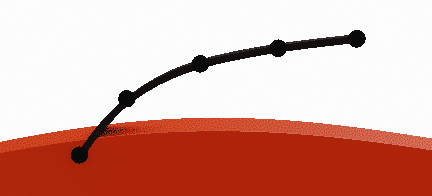
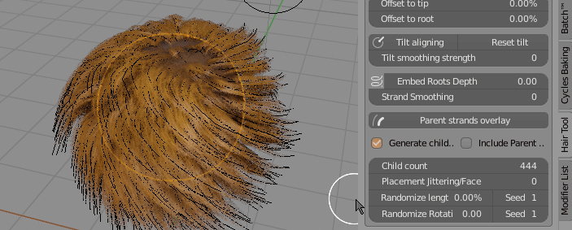
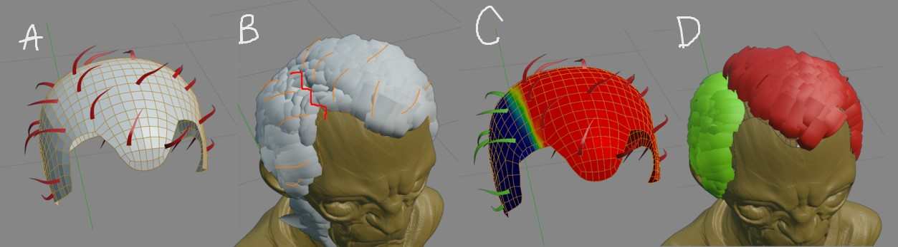

Interactive hair Grooming:¶
It best used for short, dense hair that should cover big areas uniformly (for long hair I would use 'Curves from grid surface' function - as it provides easier way guide hair IMO).
To use interactive grooming to work, you need to:
- have object with particle hair system
- be in 'Particle Edit' mode.
 Hair Grooming - panel is located in right UI Sidebar: "Hair Tool" tab (visible only in 'Particle Edit' mode)
Hair Grooming - panel is located in right UI Sidebar: "Hair Tool" tab (visible only in 'Particle Edit' mode)
In the right Sidebar(N), in 'Hair Tool' tab press 'Create Settings' button. It will create particle comb settings, for active particle system
Note: Each particle system has its own separate hair comb settings. This way you can comb multiple hair systems on one object, each slightly different. This gives you more control over hair look
Press 'Interactive Grooming' button - it will generate curve ribbons, that will be interactively updated as soon as you release your Left Mouse Button. Name of generated hair ribbons, will be the same as name of particle system. You can resume hair combing any time you want, and the generated curve ribbons will be update - as long as you will leave names the same.
Parameters:¶
- Strand width - curve ribbons width
 * Points per strand - How many points generate for each spline*
* Points per strand - How many points generate for each spline*
 Offset to tip - Move spline points more toward tip
Offset to tip - Move spline points more toward tip
 * Offset to root - Move spline points more toward root*
 * Align tilt - Align ribbons tilt to surface*
* Align tilt - Align ribbons tilt to surface*
 * Embed Roots Depth - Embed strands roots into mesh surface*
* Embed Roots Depth - Embed strands roots into mesh surface*
- Strand Smoothing - smooth generated strands (may be slow for dense hair)
- Generate children - Generate child hair strands. They will be guided by parent strands (particle hair)
- Include Parent Strands - Include parent strands when generating hair with children
- Parent strands overlay - Draw orange overlay on top of parent strands, for better visibility on dense hair (Draw Offset controls bias of overlay toward camera)
 * Child count - Amount of generated children strands*
* Child count - Amount of generated children strands*
 * Placement Jittering - Randomize child strands placement*
* Placement Jittering - Randomize child strands placement*
 * Randomize length - Randomize strands length*
* Randomize length - Randomize strands length*
 * Scale Particle Hair - Change particle hair length (and generated curve ribbons length as an result too)*
* Scale Particle Hair - Change particle hair length (and generated curve ribbons length as an result too)*
 * Randomize Rotation - Randomize rotation of generated curve ribbons*
 You can use particle system Density mask to control where child strands will be generated
You can use particle system Density mask to control where child strands will be generated
Fixing intersections:¶
Often when you want to make hairstyle with a parting you may encounter problem of child particles intersecting with body geometry like on image below. 
Best way to fix it is to split particle system into two parts - Left and Right:
- select particle hair object -> Ctrl + Shift + H -> Particle hair to curves
- then split generated curves into two objects - Left and Right
- attach Left and Right curve objects to head using - 'Particle hair from Curves', as two separate particle systems.
- create 2 density vertex groups for left and right particle hair system and you are done. You can comb left and right part independently with clean hair parting.